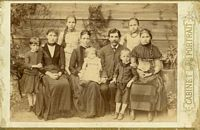
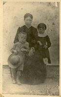
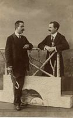
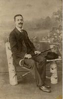
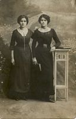
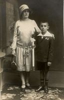
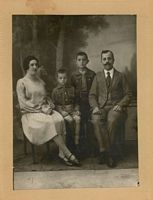
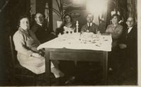

| 1024 X 768
Genealogia Rodziny CZAKOW LINIA WOJCIECHA LATA 1890 - 1933 - Zawiercie
   Wojciech i Anastazja - 1890 Bolesław z Mamą i siostrą - 1890 Bolesław z kuzynem - 1916
   Bolesław - 1916 Wiktoria z Genowefą - 1917 Bolesław i Adam - 1920 Julian z Mamą - 1926
  Stefan- 1928 Wiktoria, Stefan, Julian, Bolesław - 1930 od prawej - Adam, Natalia, Bolesław, Wiktoria i znajomi - 1933
WEB DESIGN: Janusz Czakow | ||||